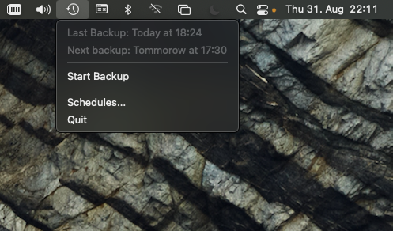

Introducing BackupSchedule
BackupSchedule is a lightweight application with a simplistic user interface to schedule your TimeMachine Backups

Replaces default TimeMachine Menu Item
Optimized for Intel and ARM
Works on macOS 10.13+
Replaces default TimeMachine Menu Bar Item
Optimized for Intel and ARM
Runs under macOS 10.13+
Easily select the days and the time the Backup should run
Automatically runs missed Backups after standby
Get a notification when a Backup begins or fails
Choose if the Backup should run under high load or in battery mode